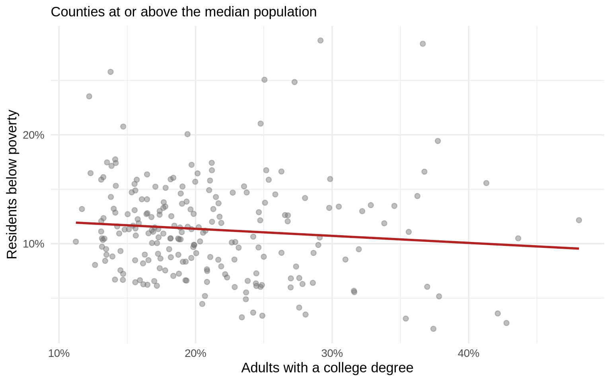
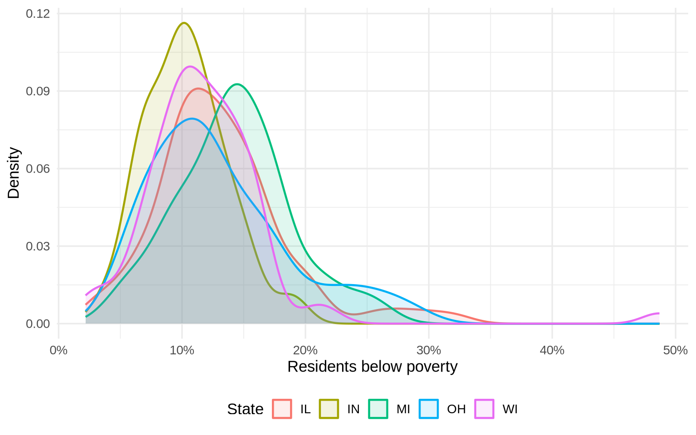

| State | Counties | Mean college % | Mean poverty % | Median population |
|---|---|---|---|---|
| WI | 72 | 20.0 | 11.9 | 33,528 |
| MI | 83 | 19.4 | 14.2 | 37,308 |
| IL | 102 | 18.8 | 13.1 | 24,486 |
| OH | 88 | 16.9 | 13.0 | 54,930 |
| IN | 92 | 16.6 | 10.3 | 30,362 |


Median college attainment: 16.8%
Median poverty rate: 11.8%
Median county population: 35,324
Highest mean poverty: MI (14.2%)
Lowest mean poverty: IN (10.3%)
Highest mean college attainment: WI (20.0%)